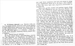

Click on images to enlarge
{kind=link}

Trachymela sjoestedti, description
Name
Trachymela sjoestedti Weise, 1916
Corresponds to
Ta08.
Diagnosis and Notes
From the description, it is quite clear that this is Ta08 - the markings, structure, size and type locality are all in good agreement. T. sjoestedti is very closely related to T. exarata (Chapuis), yet Weise does not mention Chapuis' species at all but compares sjoestedti to T. castanea (Marsham).
Type specimen
Not examined.
Original description
Translation of original description (Figure 1) by ChatGPT, 05/2026:
Shortly oval, convex, ferruginous, somewhat shining; pronotum densely and moderately finely punctate, toward the sides a little more strongly rugulose-punctate; elytra densely, somewhat serially rugulose-punctate, with blunt tubercles arranged in rows, each elytron with three black spots arranged 1, 1, 1.
Length 8.5–10 mm. Northwest Australia: Kimberley District, January, March. 3 specimens.
Var. a: humeral spot absent.
Very similar to Trachymela castanea Marsham (tuberculata Chapuis), but the pronotum and elytra much more strongly and rugosely punctured; the former less deeply depressed at the sides; the latter highest at the middle and from there sloping posteriorly in a uniformly strong curve onto the narrowed lateral declivity before the apex. In castanea, by contrast, the elytra are highest near the suture at one-third of their length (and there also more finely punctured) and decline posteriorly in a long flattened curve extending to the apex itself, so that no trace of a differentiated lateral margin can be observed there. Broadly oval, convex, dark and saturated rust-red, with greasy gloss. Each elytron with three black spots: the first, at the base, is the largest, usually transversely quadrate, and at maximum extent occupies half the space between the outer side of the humeral callus and the scutellum; however, it is often absent (var. a). The following two spots are small and rounded; one lies before the middle near the suture, the other behind the middle on the lateral declivity. Head not very densely and moderately finely punctate, with extremely fine punctures intermixed. Thorax almost three times as broad as long, widest before the rounded posterior angles; disc densely and strongly rugosely punctured; the lateral declivity, which is set off by a broad longitudinal depression, more strongly punctured. Elytra slightly broader at the shoulders than the pronotum, then widened very little up to the middle, thereafter roundedly narrowed; densely rugosely punctured, each with eight not especially distinct rows of small granules, of which the fifth to seventh rows are usually completely obsolete from the shoulder to beside the third spot.
References
Weise, J. 1916. Results of Dr. E. Mjöberg's Swedish scientific expeditions to Australia 1910-1913. 11. Chrysomeliden und Coccinelliden aus West-Australien. Arkiv för Zoologi 10(20): 1-51 (page 32).
Copyright © 2026. All rights reserved.